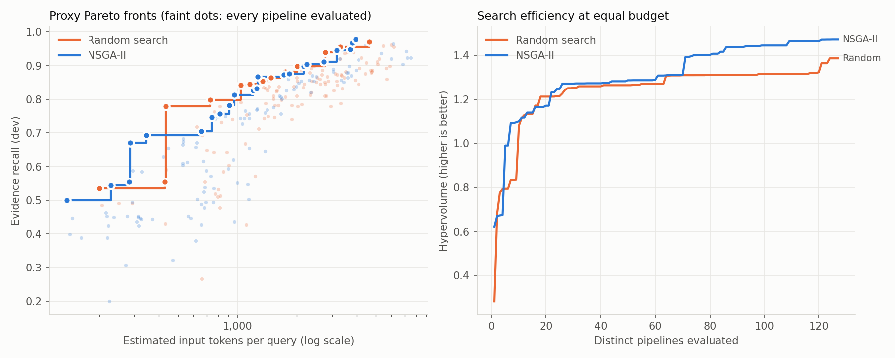
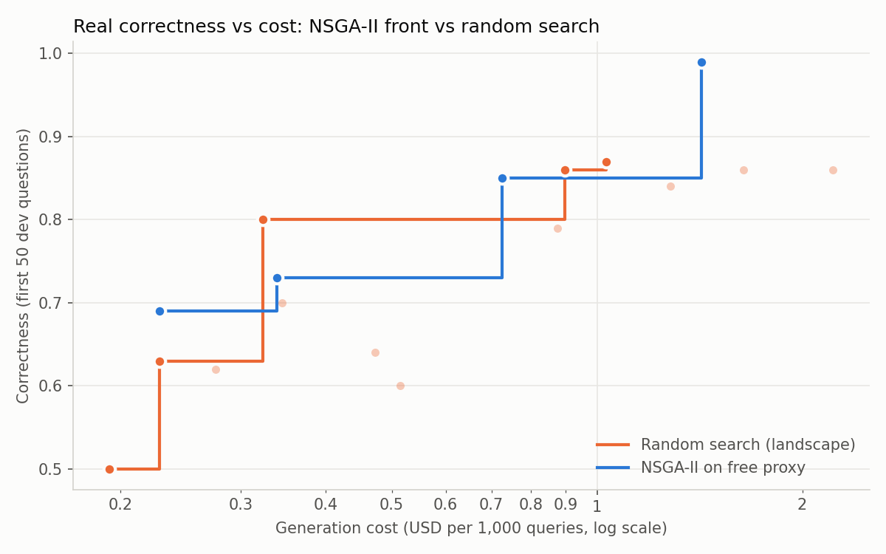

Evolving question-answering pipelines for the EU AI Act
A question-answering system for the EU AI Act: it searches the law for the relevant passages, then writes an answer from them. I used evolutionary search (NSGA-II) to optimise the RAG pipeline for the best balance of accuracy and cost and finally fine-tuned the search model on the Act's vocabulary.
The numbers below come from 75 questions set aside for the final test and never used during development. Hover over a pipeline name to see how it works, then browse the questions and compare each answer with the verified reference answer.
- Writes, plans and grades answers
- Gemini 3.5 Flash-Lite, used as is through Google's API
- Finds the passages
- bge-small-en-v1.5 (BAAI), fine-tuned with LoRA for the Low-cost tuned pipeline
| Pipeline | Single article | Multi-step | Numbers and dates | Grounded in sources | Cost per 1,000 questions |
|---|
The two scoring rules differ only on questions the Act doesn't answer. The strict rule counts a reply as correct only if it uses the exact sentence "The provided context does not contain the answer"; the lenient rule also accepts replies that say the same in other words. Every such reply was reviewed by hand, and all were correct. Overall correct shows the strict score first.
Compare the answers
Pick a question. The reference answer was written and checked by hand; the article chips show what each pipeline read, highlighted where they match the articles that hold the answer.
How it was built
Four steps, in order. Hover over or select a step for the details.
Build the test bed
Before optimising anything, you need a score you can trust.
The law
The AI Act as published in July 2024, split into its 113 articles and 13 annexes. Every passage remembers which article it came from, so the search can be checked against known answers.
253 questions with verified answers
- Single article: the answer is in one place.
- Multi-step: needs two or more articles, such as a rule and its fine.
- Numbers and dates: amounts, percentages, deadlines.
- Not in the Act: the right move is to say so.
Each has a reference answer and the exact sentence of the Act that supports it. Drafted with an LLM, every quote checked automatically against the text, every question checked by hand. 75 were locked away for the final test shown on this page.
An LLM as judge
Gemini 3.5 Flash-Lite, the same model that writes the answers, scores each one for correctness against the reference (right, partly right, wrong) and for staying grounded in the passages it read. Because a model grading its own kind can be lenient, the judge was checked against human labels. It agreed with my labels on every clear-cut case, and repeated runs varied by under one percentage point.
A hard spending limit
Every model call is cached and counted, and the code refuses to spend past the budget. The whole project cost about €3.75.
Evolve the pipeline
Every design choice is a gene. NSGA-II, a multi-objective evolutionary algorithm, breeds pipelines that are both accurate and cheap.
The genes being optimised
- Chunker: how the law is cut into passages. Fixed cuts every N characters, recursive cuts at natural breaks such as paragraphs, semantic cuts where the meaning shifts.
- Chunk size: how long each passage is, from 200 to 2,000 characters.
- Chunk overlap: how much neighbouring passages share (0–30%), so a sentence split at a boundary isn't lost.
- Chunk header: whether each passage starts with its article title, such as “Article 5: Prohibited AI practices”.
- Embedder: the model that turns text into meaning vectors (bge-small, bge-base or e5-base).
- Retrieval method: search by meaning (dense), by keywords (BM25), or both (hybrid).
- Hybrid weight: in hybrid search, how much meaning counts against keywords.
- Passages read (top-k): how many passages the model reads before answering, 1 to 20.
- Query planning: whether the model first plans extra searches (added in step 3).
A free stand-in score
Judging every candidate with the real model was too expensive, so evolution optimised a free score: does the search find the passages that hold the answer? The first version was gamed. Tiny passages found fragments of the right article without the answer. A stricter version, does the search find the exact answer sentence, fixed it and ranked pipelines almost exactly like real accuracy.
Result
With the same budget of 127 pipelines, NSGA-II found a better set of trade-offs than random search (+6% hypervolume). The best pipelines were then checked with real answers.

Optimisers exploit weak scores. Checking the result with a stricter score caught it for free.
Fix the weak spot
Questions whose answer sits in a different article from the one they mention.
Planned searches
What is the maximum fine for using a prohibited AI practice?
A single search finds Article 5, which lists the practices, but not Article 99, which sets the fine. With planning, the model first writes extra searches such as “penalties for non-compliance”, so Article 99 gets in. Results from each search take turns filling the same number of slots, so planning changes what is read, not how much.
Numbers and dates on development questions: 83% → 95% correct.
The combine instruction
Multi-step questions still failed. A diagnosis showed that in every failure, all the evidence had been found and the model refused anyway, because no single passage answered the whole question. A new instruction, to follow references between passages, answer the supported parts and say which part is missing, fixed it: 78% → 89% on development questions, while still declining questions the Act doesn't answer.
Evolution learns when to plan
Given planning as a gene, NSGA-II learned on its own to use it only when at least 4 passages are read. With fewer slots, the extra searches crowd out the passage the question needed.

Diagnose before optimising: a free failure analysis pointed to a one-instruction fix.
Fine-tune the search model
Can the small search model (bge-small-en-v1.5, 33 million parameters) learn the Act's vocabulary, and can an evolutionary method train it as well as gradients? Gemini itself was never fine-tuned.
Training data
The model wrote realistic questions for passages of every article, several hundred pairs. Anything too similar to the test questions was dropped, and the test questions were never used for training.
Four methods, same data
| Method | Size | Trained by | Answer found |
|---|---|---|---|
| No fine-tuning | – | – | 77.5% |
| Small adapter | 384 | gradient descent | 79.1% |
| Small adapter | 384 | CMA-ES (evolutionary) | 77.2% |
| Large adapter | 147k | gradient descent | 85.4% |
| LoRA | 147k | gradient descent | 85.4% |
- At equal size, evolution and gradients tied. CMA-ES optimised the ranking directly, without gradients.
- Size is what helps. 384 weights can only rescale; 147k can reshape how the model reads the Act.
- It helps cheap pipelines, not the best one, which already finds about 98% of answers by reading more and adding keyword search.
LoRA was kept for the Low-cost tuned pipeline. It runs at the same size and speed as the original model.